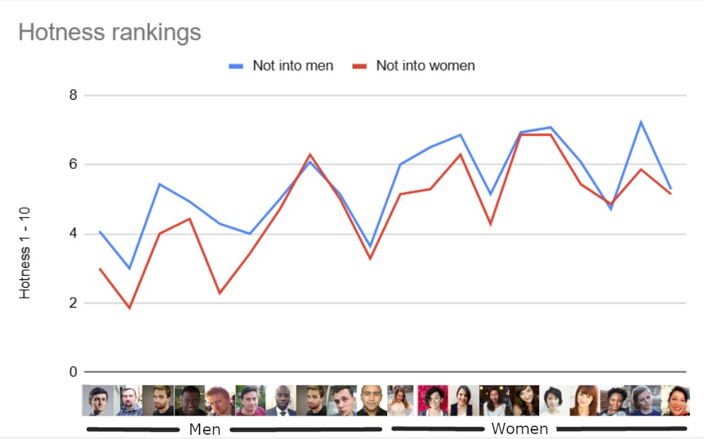
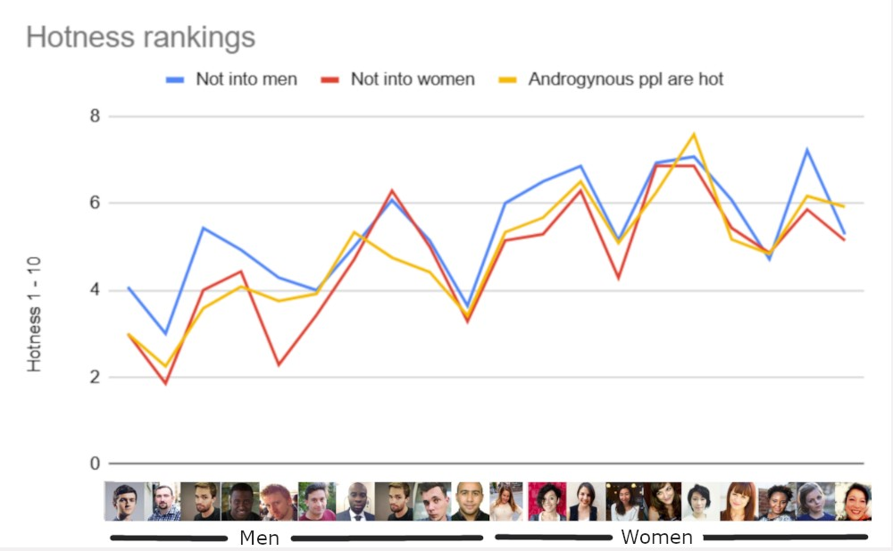
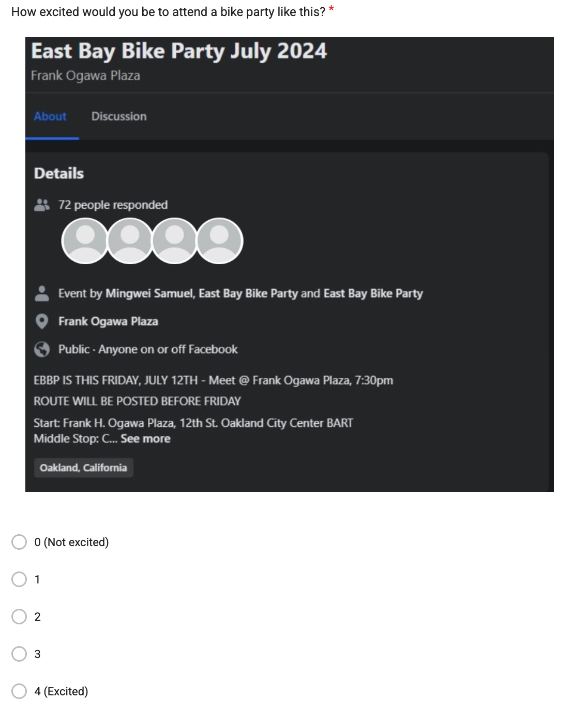
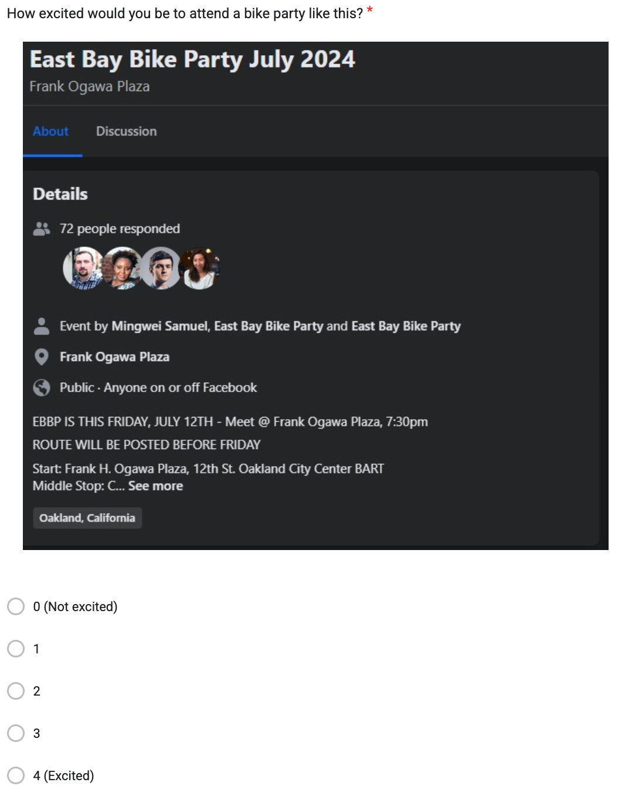

Do people attend parties just based on how hot everyone is?
An airtight analysis by me, Elliot C.
In the age of flaking on plans I often wonder what's getting people out of the house. I'm only slightly ashamed to admit that I'm much more likely to attend an event where everyone's super attractive. Sue me. And I wonder how many people secretly or subconsciously feel the same way...
So I designed this experiment to test if people are just scoping out the hotties when they choose where to hangout.
Experiment 1
Who's hot?
First, I need to know who's hot and who's not. Hotness is a fungible thing. In 1980's Dallas, it was big hair. In Edo Japan it was wakushu boys with a shaved forelock. Now it's anyone who's able to find employment and suitable housing.
To get a baseline sample, I downloaded 20 stock profile pictures and had people rank them from 1 to 10. We also asked if you were attracted to men, women, and or androgynous people.
Here are our 20 guinea pigs, our building blocks of human beauty.


They're all beautiful on the inside, save for that one guy, but what about on the outside? We had to ask my rolodex to find out.
What we found will shock you.
dramatic string quartet music builds
And it's all coming up right after this...
At the container store, we believe life's most important boxes go beyond the casket. From the modern Aura line of polyeurethene storage bins to the classic little house on the prairie wood crate look, we believe anyone can hoard discreetly in any style and for any season.
Ok we're back. And here's what we found
News flash: not everyone's attracted to everyone else
Out of 33 responses...
- 19 people said they were attracted to men
- 26 people said they were attracted to women
- 12 people said they were attracted to androgynous people
People rated the women's profiles higher
This is surprised me at first, but I don't think it should. We've gotten pretty good over the last 10k years at objectifying women, and there were more participants who said they were attracted to women (26) than men (19).
But interestingly, even people who said they weren't into women rated the women's profile pics as more attractive, on average.
And we can throw the androgynous fans in there as well.
They mostly split the difference between our more hetro-seeming participants... except they went wild for photo number 16
Wowza!

And they weren't as smitten with our bearded heartthrob, photo
Some faces were more polarizing than others...
Smallest standard deviation
Photo #16 had the smallest standard deviation and the highest overall score, so we can go ahead and say. Everyone agrees - total smokeshow. Hats off to you, queen. Flawless. Everyone's loving the cut.
Largest standard deviation
People could not agree on photo #5. Can you blame em?

I'm taking a good hard look at him right now, and I have to say I don't know what to think either. It's halfway like I'm looking in the mirror and half like I'm 5 Guinesses into an afternoon bender and Chum wants to take me double or nothing in darts.
Let's break down the chart again.
A bunch of people said "I'm not into men, but he's not so bad!". But their counterparts said "I'm into men, and he is not cutting it."
A similar thing happened with other guy photos where folks who are supposedly "not into men" rated the men more highly than everyone else. Do you all have something you want to share? Or maybe you're just guessing what other people would find attractive...
Biggest shocker
Photo 16 takes our grand prize, but they weren't everyone's favorite. The "Not into men" group showered their praise on the whole field, giving out higher overall ratings. But they had a particular soft spot for...
Miss ponytail

Miss ponytail came in with her confident eye contact and questionable status as a legal adult and swept these people off their feet. I find it very interesting that this more feminine-looking photo got these non-men lovers all charged up, where as photo 16 was a top choice on average.
Interesting side note - people in the "not into women" category had their own favorite as well - photo 15!
She slightly edged out photo 16 in their minds. Interesting!
Honorable mentions
Hottest men
- Hottest man overall 💥
- The turncoat award 🎭: Hottest man for ppl not into men
- The gentleman's award 💰: Hottest man for those into men
He's an acquired taste, but the true connoisseurs know he's a cut above the rest.
Experiment 2
Will dangling these hotties in front of people make them more likely to attend an event?
Here's how it went down
- Bike party
- Jazz Concert
- Knitting
- Craft Fair
- Dance
- Indigenous Shellmound Ceremony
and replaced the profile pictures with our hotties and notties.
Then I asked people to rate how interested they were in the event on a scale of 0 (not excited) to 4 (excited)
I chose these events since they spanned multiple hobbies. I wanted to see if hot people could pique people's interest regardless of the event.
And there lies my whole thesis. I find that the people are more important than the activity. I like board games, but I wouldn't play them with just anyone. If anything, if there were a crew of people getting together just because they're into board games, I might be less likely to enjoy that event.
Or take the knitting club example. Imagine a bunch of people getting together to knit. Are they grannies? That's all fine and good, but imagine they're all hot young people. Now that's a crew i'd be interested in! Creative people weird enough to take up knitting but still somehow conventionally attractive? I'm intrigued. Maybe this is all just telling of my phase of life, though. We should run a follow up experiment where we see if people who aren't actively dating care less about the smoke-shows and the nope-shows.
Ok, here's the experiment
Control group
20 people were in a control group that saw 6 event invites with placeholder profile images
Hotties group
18 people saw 6 event invites like this (the two highest scoring women pics and the 2 highest scoring men pics)

Notties group
22 people saw 6 event invites like this (the two lowest scoring women pics and the 2 lowest scoring men pics)
What's next?
Start a pottery studio?
Gyms, bars, yoga studios, sports leagues, dance events. These are places where people go to see and be seen, whether that's top of mind or not.
The other day I was walking by a workshop in San Francisco that had 10+ people bent over their work stations making things. They looked like stylish thirty-somethings who had just got off work and were getting their extra curriculars in. I didn't even know what they were doing, but just based on there being 10+ men and women in there having fun I was drawn to the place. Also I like making things and DIY projects. By the time I crossed the street to take a closer look, the fact that they were making pottery was sort of a non-factor in my interest. It was more about "are these the kind of people I could see spending time with?"
Maybe next I'll open a pottery studio and have my tuesday thursday cohort be total smokeshows and the monday wednesday cohort be more noshows. Which pottery studio would you be more intriguing as a passerby?